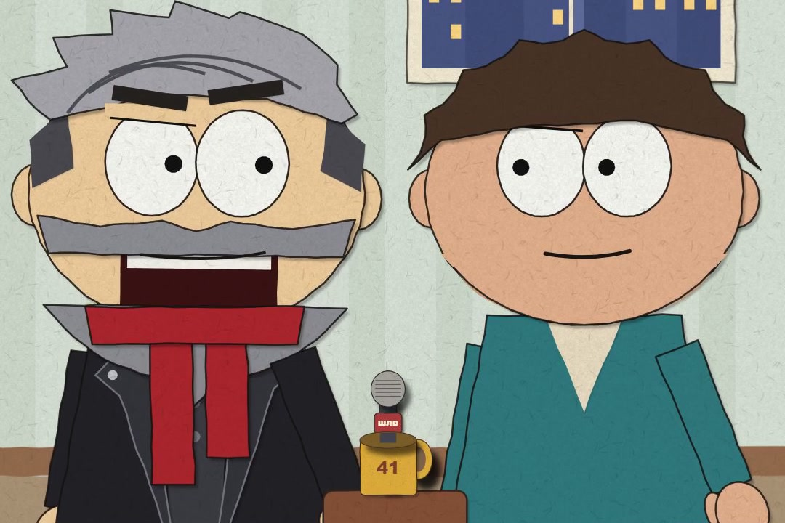
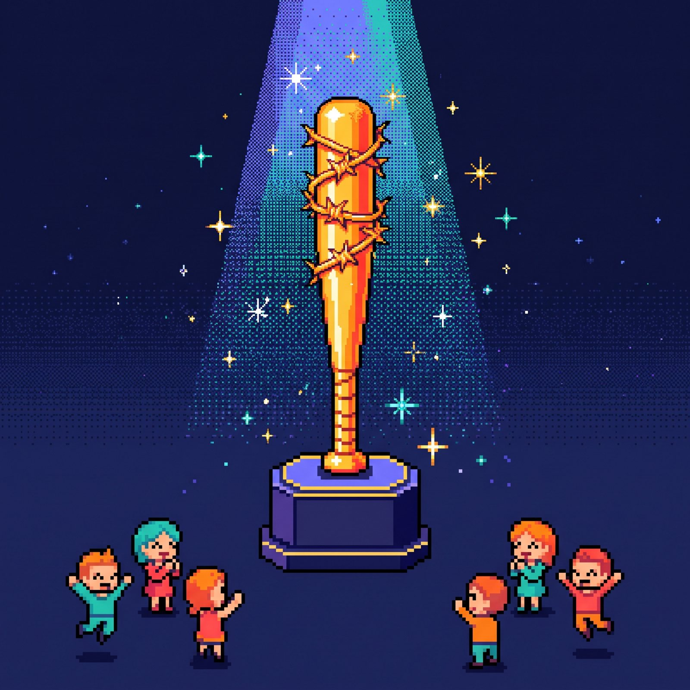

ШЛВ 41 / ВЫПУСК 2
Экваторвлияния
Два капитана у одной команды, спор об архетипах и открытый урок. Что обсуждал 41‑й поток.
Люди потока
Нажмите на карточку, чтобы узнать историю.
Как менялся поток
Каким стал 41-й поток к середине школы.
29 октября74
→Первый выпуск68
→Экватор57
Сообщения по дням
28 октября – 23 ноября · пик 5 ноября, 1 142 сообщения
Выступления команд
| Команда | Старт | Первый выпуск | Экватор |
|---|

БУМАЖНЫЙ МУЛЬТФИЛЬМ · 1 МИН
Первый гость
Гость пришёл послушать открытый урок. Вова уже бежит к нему с микрофоном. Как тут завязать разговор?
Руководитель и кураторы ШЛВ
Здесь руководитель школы и кураторы четырёх команд. Нажмите на карточку, чтобы увидеть портрет. Второе нажатие откроет его крупно.
ЦЕРЕМОНИЯ
Золотая Люсиль
Откройте конверт, чтобы узнать победителя и услышать историю.

Найди себя
Активность в Telegram с 28 октября по 18 ноября.
| Участник | Сообщ. | Реакции |
|---|